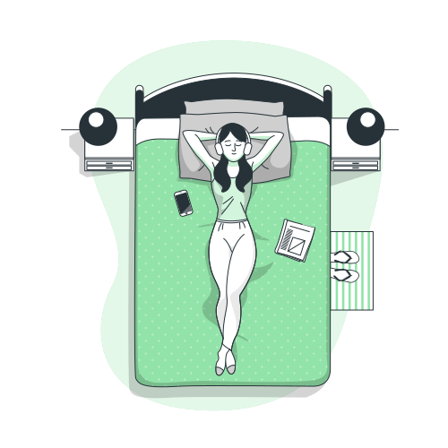
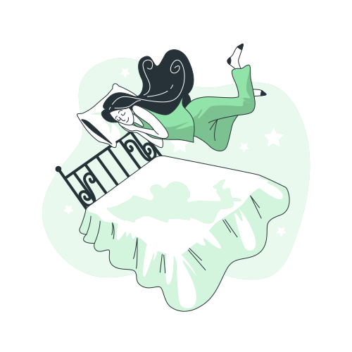

1. Физическая активность
Физическая активность является одним из ключевых аспектов здорового
образа жизни. Она делает человека не только физически более привлекательным, но и существенно
улучшает его здоровье, позитивно влияет на продолжительность жизни, в первую очередь активной ее
части. Риск развития у него опасных для жизни заболеваний сосудов сердца и мозга, сахарного
диабета, рака является достоверно более низким.
По данным медиков регулярная физическая
активность обеспечивает:
снижение риска:
– внезапной смерти, в первую очередь ранней, острых сосудистых заболеваний сердца и мозга,
– артериальной гипертензии,
– сахарного диабета 2 типа,
– рака толстой кишки,
– психических нарушений (тревожно-депрессивных состояний).
улучшение:
– контроля массы тела,
– прочности костной ткани (профилактика остеопороза),
– качества жизни.
Как же можно обеспечить необходимый здоровью минимум физической активности?
2. Отдых
В течение дня мозг часами обрабатывает входящую информацию и разговоры. Если не давать ему расслабиться, пострадают ваше настроение, производительность и здоровье. Поэтому так необходим умственный отдых — периоды, когда вы не концентрируетесь и не взаимодействуете с внешним миром, а даёте мыслям витать в облаках.
Как отдыхать правильно?
Мытьё посуды, работа в саду, прогулка, уборка и прочие подобные виды деятельности — благодатная почва для активизации сети пассивного режима работы мозга. Обычно нам совестно бездельничать и витать в облаках, а во время таких дел как раз можно мысленно отдохнуть.
Большинство людей берёт в руки телефон просто от скуки, но такая привычка лишает возможности расслабиться. Попробуйте убрать смартфон подальше и не отвлекаться на него. Например, когда вы стоите в очереди или ждёте кого-то. Заметьте, как вы себя при этом чувствуете. Скорее всего, сначала вы будете нервничать, но вскоре начнёте обращать внимание на окружающий мир или погрузитесь в свои мысли.
Социальные сети — главный враг умственного отдыха. К тому же они создают неверное представление о чужой жизни, ведь мы видим только идеальную картинку. Всё это вместе с огорчающими новостями вызывает стресс. В течение нескольких дней следите, сколько времени проводите в соцсетях и какие ощущения это у вас вызывает. Ограничьте время в них, например до 45 минут в день. Или сократите список друзей, оставив только тех, с кем вам действительно нравится общаться.
Прогулка в парке восстанавливает лучше, чем ходьба по городу. В городской среде нас постоянно окружают отвлекающие факторы: гудки транспорта, машины, люди. А пение птиц, шелест листьев и другие природные звуки, наоборот, успокаивают. В таких условиях легче расслабиться и отпустить свои мысли.
Активация СПРРМ — не единственный способ ментально отдохнуть. Ещё полезно заниматься любимыми делами, даже если для них нужна концентрация. Например, чтение, теннис, игра на музыкальном инструменте, поход на концерт тоже помогут восстановиться. Так что подумайте, какие виды деятельности дают вам энергию и не забывайте выделять на них время.
3. Сон
В первую очередь сон – это отдых для организма. Если сна будет не хватать количественно или качественно, то человек начнет испытывать физическое недомогание, головные боли, раздражительность. Причем большинство людей даже не осознают, что причина их плохого самочувствия – неполноценный сон. Часто они говорят «у меня сейчас большой стресс», «я закрутился на работе» или «я испытываю усталость». Таким людям необходимо в кратчайшие сроки наверстать дефицит сна и восстановить свой организм. Иначе в дальнейшем они начнут совершать ошибки, которые никогда не совершили бы, если бы их сон был качественным.
